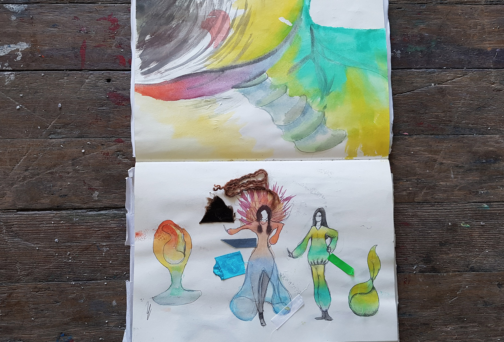
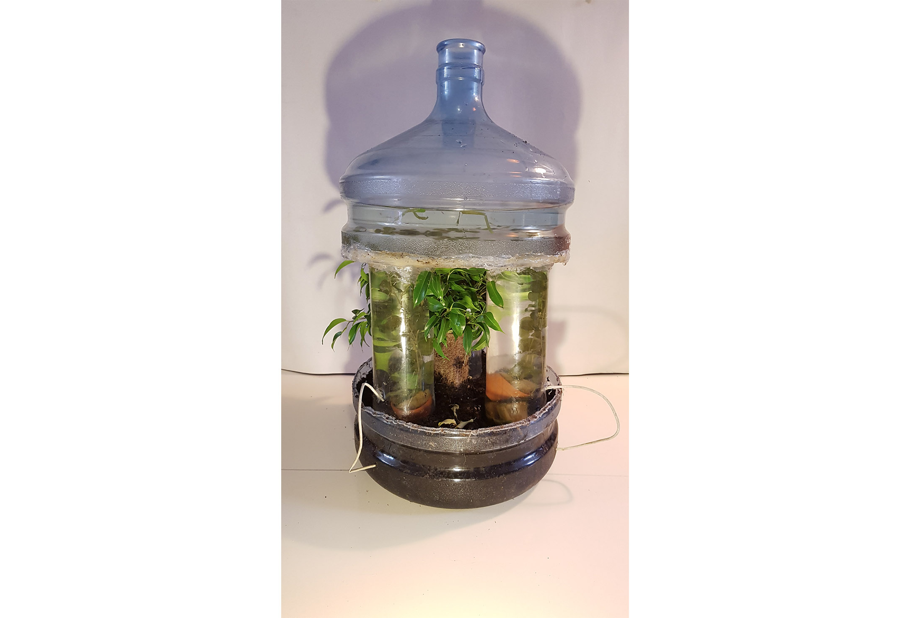
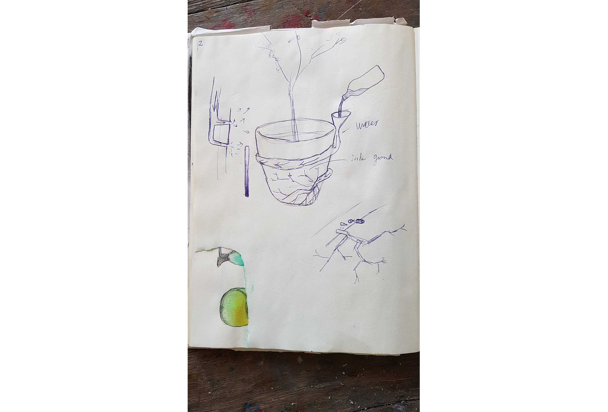
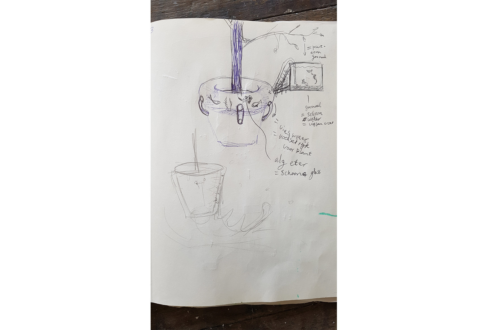
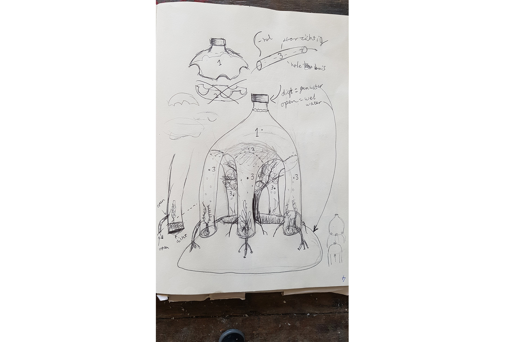

Ik heb voor mijn trimester expo een planten pot/aquarium gemaakt met als inspiratiebron planten. Ik begon met het schetsen van jurken en stoelen + de kleuren en vormen van planten, toen kreeg ik het idee om een planten pot te maken waar je de vormen van de plant terug ziet in de pot, bijvoorbeeld een wortel aan de buitenkant van de pot waardoor water langzaam naar de plant toe loopt en je het water voor de plant minder vaak hoeft bij te vullen. Toen dacht ik als ik toch al een grote hoeveelheid water bij de pot heb kan ik daar net zo goed vissen of ander water leven in doen. Ik heb dat idee verder uitgewerkt tot ik een klein boompje hed met een daaroverheen koepelend aquarium warin zich kleine garnaaltjes bevinden. Ik heb als basis voor het aquarium een grote water fles gebruikt daaronder staan 3 water flessen waardoor de top van af is gezaagd. Via kleine buisjes stroomt langzaam een beetje water naar de plant toe.
Click here to talk with the artist!
    